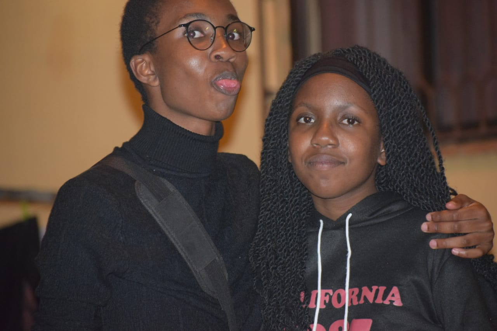
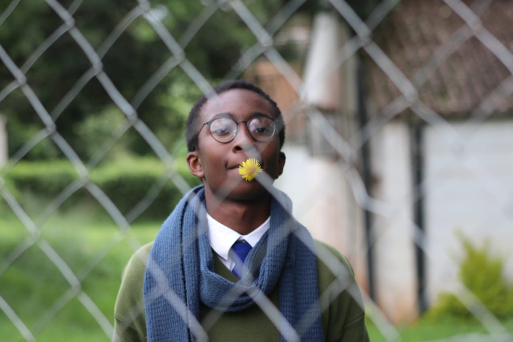
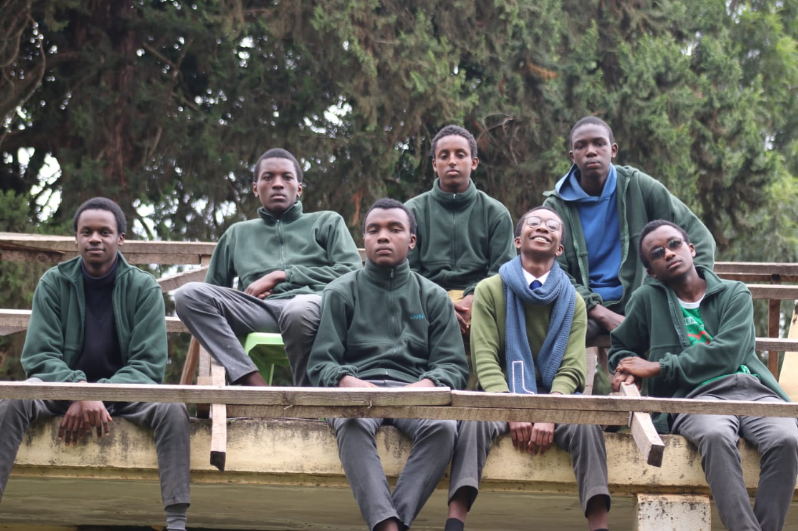
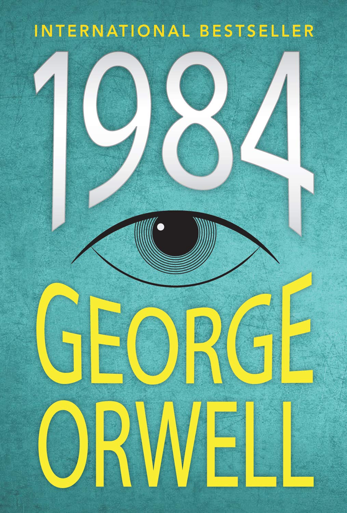
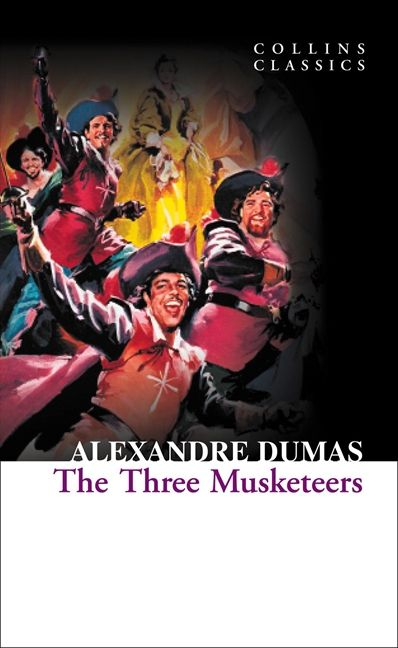
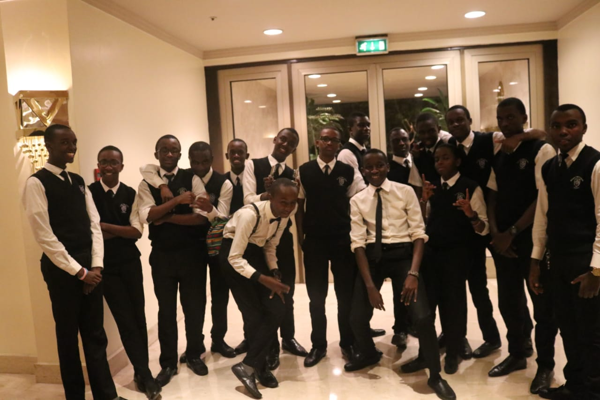
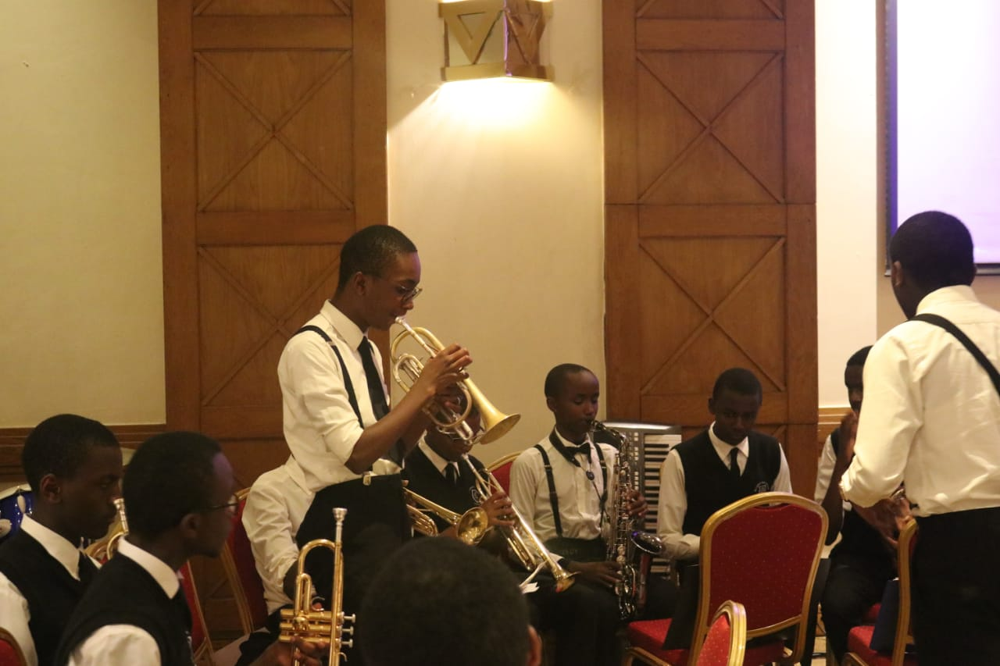
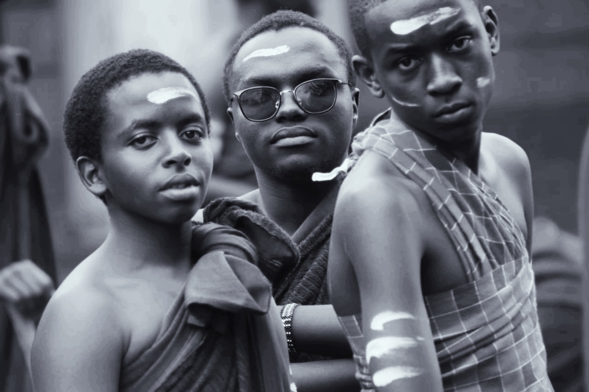
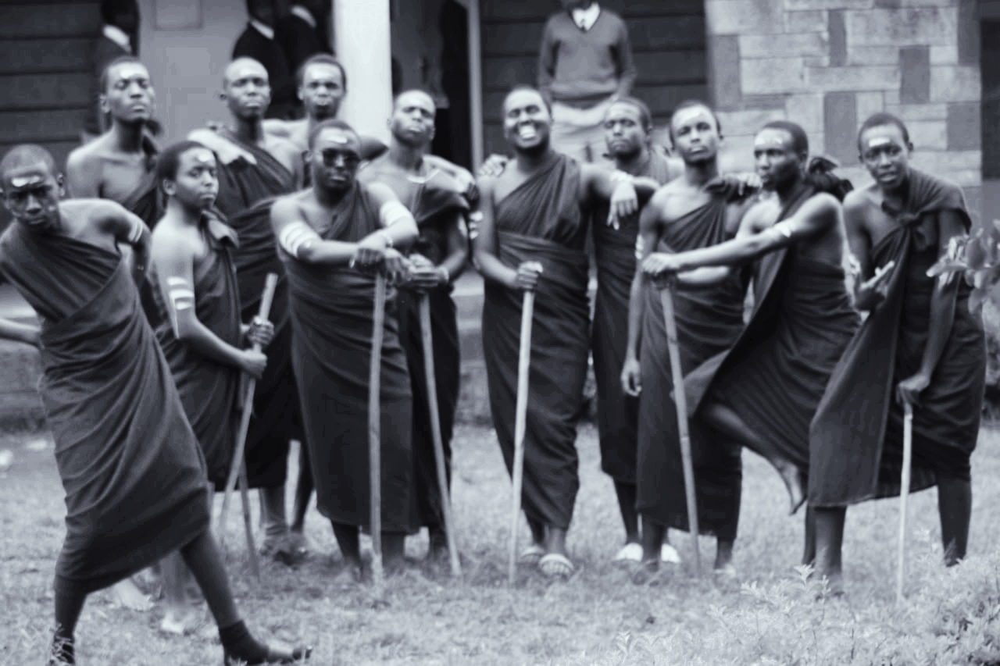

Owiti Kamau
Cause its homework and I don't want to flunk :)

Projects
- My Favourite Band
- Hello World
About me

Early Childhood
I was born and raised in Buruburu, Nairobi which was the coolest estate back in 2002. Times were much simpler then and being a child was amazing. I attended Thomas Burke Primary school which was nearby and where I spent happy moments there. Despite my small frame I was a decent enough footballer and regularly got picked to play. I got elected class head boy in class 8 which was really cool but just like Jon Snow, I didn't want it. Plus it really questions their selection criteria cause I was a stubborn deliquent then. Less so now ha. I used to perform well and pass though I never used to read and was always playing sports or making noise in class. It wasn't all rosy cause then the teachers always used me as an example of bad influence that lied to people yet read at home. People didn't really listen to me then especially during exam time but unluckily for them the results were more or less always the same. However after my time in that prison, I was unluckily promoted to maximum seccurity at Alliance High School
Teenage and Hormonal years

Well let me just by saying I DID NOT want to go to Alliance. Probably cause I never went to boarding and also my friends told me that the guys there are book-nerds. Honestyly I wanted high-school to be wild-parties and everything disney lied to us is was. In the end I became the very thing I was afraid of. I had lived long enough to see myself become the villain. So after the four years of reading and everything I sat my exam and kind of relatively passed so I'm grateful for that
Hobbies
Over the course of my existence I have amassed a vast majority of interests and pasttimes.
Firstly I am a book nerd. I started reading since I was like 3 and my uncle who was a literature professor at Cambridge (aight its not Cambridge but its a British school so you get the idea) was really impressed and recommended that I get a library membership card which I did and I have never regretted it till this day. I've read over a hundred or even five hundred books but I'm just going to put 5 of my favourites here. With a few notes just incase you read this far down and are down to check them out.
- Lord of The Flies by William Golding

So this book is really...disturbing cause its about a bunch of boys who are stuck on an island and in their bid to survive, the devolve into animals. Really good read
- 1984 by George Orwell

This is a book that had me like wooooaaah THE F.... anyway, its really interisting if you're into the human psyche and world war and politics. Check out animal farm by him as well
- The Adventures of Tom Sawyer by Mark Twain

If this book doesn't make you laugh and feel nostalgic YOUR CHILDHOOD SUUUCKED
- The Three Musketeers by ALexandre Dumas

Its a long novel that really appeals to your sense of adventure and comedy. And its plot twist is AMAZING
- The Government Inspector by Nikolai Golgol

Simply amazing
I'm also really into music. I actually play the trumpet, saxophone and guitar. Cause I heard it helps with the ladies. Well that was a lie! But i developed a passion of it over time.
PS I'm playing at a concert in March so if you down slack or email me it'd be really nice if you come to enjoy the music and have a good time and also the commision I get from the ticket sales so...


I've also developed an interest in coding and technology. I had an awesome idea at school and decided to join Moringa to see what I can make of it. Hopefully it works
Last is photography, especially with Polaroids cause they look so cool and yeah I'll try see how that goes.


Reason for joining Moringa School
I wanted to explore the technology world because I had a concept for an application I wanted to try see if it goes through. I chose Moringa in particular because after checking out all the other places, I saw it was the best option and I liked their teaching modules. Seems I made the right choice